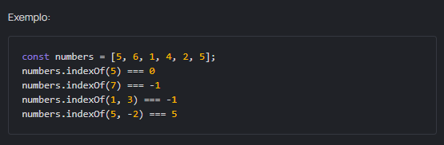
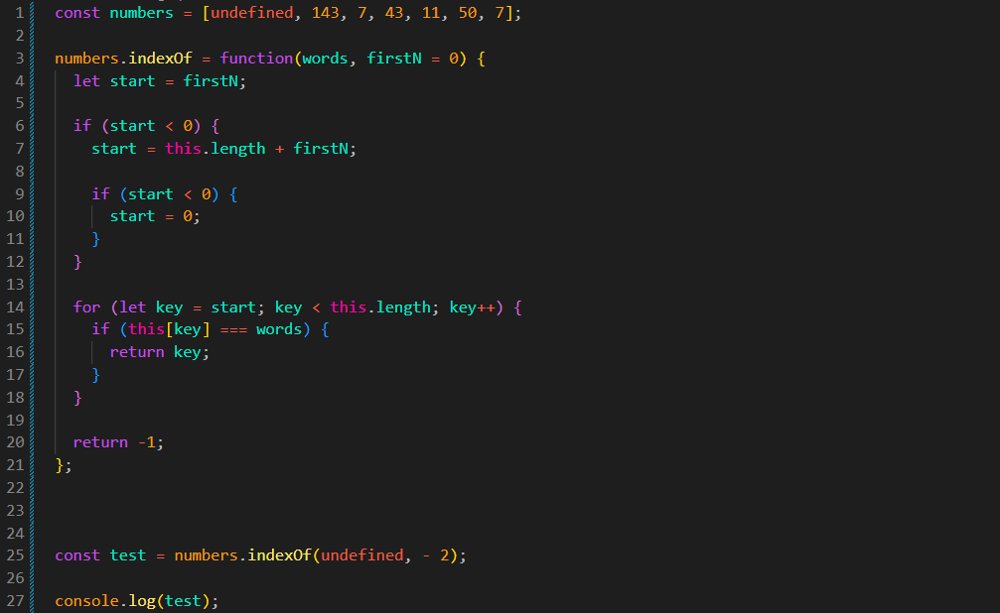

Implemente o método indexOf, que repete a funcionalidade do método original. Use this dentro do método para acessar o array
O uso de métodos de array está proibido nesta tarefa. Use loops, acesso por índice e o comprimento do array, se necessário.

Resultado
JS:

Explicacao Codigo:
// Se o índice inicial for negativo, ajustamos contando a partir do final.
if (start < 0) {
start = this.length + firstN;
// Se ultrapassar o início do array, começa no índice 0.
if (start < 0) {
start = 0;
}
}
// Percorre o array começando pelo índice definido em start.
for (let key = start; key < this.length; key++) {
// Compara o valor do índice com o valor procurado.
if (this[key] === words) {
// Se encontrar, retorna o índice.
return key;
}
}